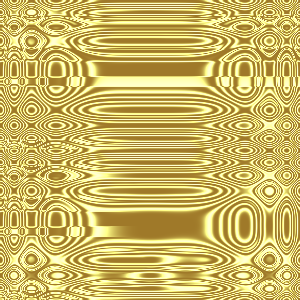
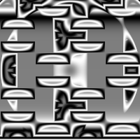
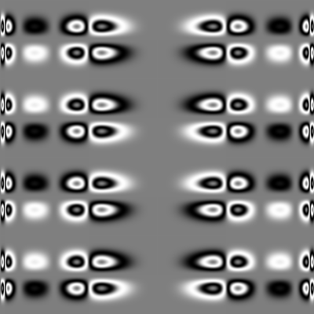
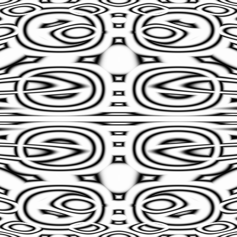
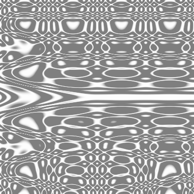
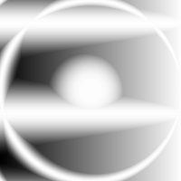
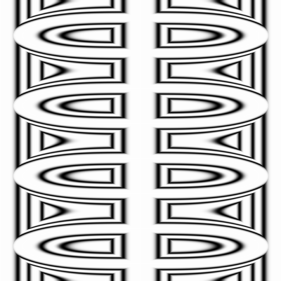

Images from random composition of functions
Below are images generate through random composition of functions with domain and range between -1 and 1.
To see images generated live, you can click here.
A color version is here, but the colors at this point are ugly.






